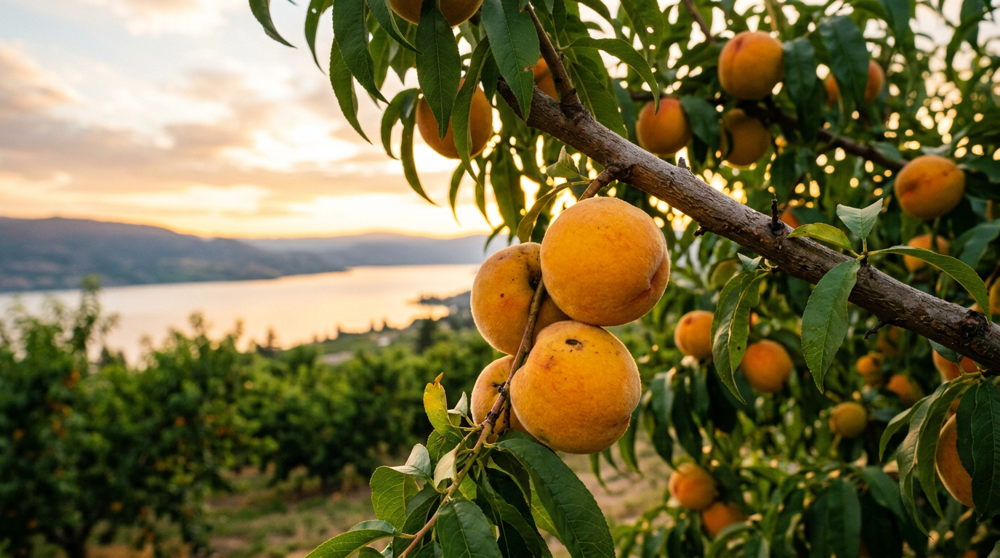

Le pesche che stregarono i Papi.

C'è una leggenda, a Castel Gandolfo, che i Papi non partissero mai per Roma senza portarne con sé una cesta piena. Erano dolcissime, gialle o bianche, con la buccia vellutata come una guancia. Le pesche del borgo. Novant'anni fa qualcuno decise di dedicargli una festa.
La prima Sagra delle Pesche di Castel Gandolfo si tenne nel 1936. Erano gli anni in cui l'Italia rurale scopriva le sagre come strumento di identità locale, e il borgo pontificio, che coltivava pesche dalle colline vulcaniche fin dal Settecento, ne aveva più di una buona ragione. Nel 2026 la sagra festeggia la sua novantesima edizione, dal 20 al 26 luglio.
La pesca di Castel Gandolfo
Non è una varietà unica, ma un ecotipo locale. Le pesche coltivate sui terreni vulcanici che circondano il lago hanno caratteristiche precise: polpa spicca (che si stacca facilmente dal nocciolo), zuccheri elevati grazie al microclima lacustre, aromi intensi dovuti ai suoli ricchi di potassio e ceneri vulcaniche. Esistono le varianti a polpa gialla — più aromatiche, più diffuse — e a polpa bianca, dolcissime, delicate.
La raccolta va dalla seconda metà di giugno alla prima settimana di agosto. Il periodo di piena maturazione coincide, non a caso, con la settimana della sagra: da lì il calendario che si è consolidato negli ultimi decenni tra il 20 e il 26 luglio.
Dai giardini pontifici alla tavola
Si racconta che le pesche fossero coltivate anche all'interno delle Ville Pontificie, negli orti che fornivano frutta e verdura al Palazzo. La documentazione settecentesca cita frutteti di pesco tra i giardini di Villa Barberini, dove ancora oggi si possono vedere alberi centenari.
Nella cucina castellana la pesca entra a tutti i livelli: dalle marmellate di produzione locale ai dessert delle trattorie (pesche al vino Frascati, cheesecake alla pesca, sorbetti), dai cocktail estivi (il bellini dei Castelli, con Frascati Superiore al posto del Prosecco) al piatto salato — la pesca grigliata con caprino e miele è ormai un classico dei ristoranti gourmet della zona.
“Non è una pesca. È il sapore di un'estate che si può assaggiare solo qui.”Un contadino dei Castelli · settembre 2025
La sagra: una settimana di festa
La 90ª edizione della Sagra delle Pesche si svolge dal 20 al 26 luglio 2026. Sette giorni di stand gastronomici lungo il corso principale, cantine dei Castelli, degustazioni guidate, cooking show con chef locali, musica dal vivo ogni sera. Il momento clou è la sfilata storica del sabato, con i carri allegorici e la benedizione delle pesche in piazza della Libertà.
Ingresso libero, stand aperti dalle 17 a mezzanotte. Nei giorni di sagra il centro storico chiude al traffico. Si consiglia di arrivare in treno da Roma o parcheggiare al Lago Nord e salire a piedi.
Un simbolo che resiste
Novanta edizioni sono un traguardo raro. La sagra è sopravvissuta alla guerra, al Concilio Vaticano II, alla scomparsa di Papi, alla pandemia. Ogni luglio, puntualmente, il borgo si riempie del profumo della pesca matura. È un rito che precede il turismo di massa e la cucina fusion. Un modo, forse, per ricordare che alcune cose resistono. Anche le più semplici. Anche una pesca.